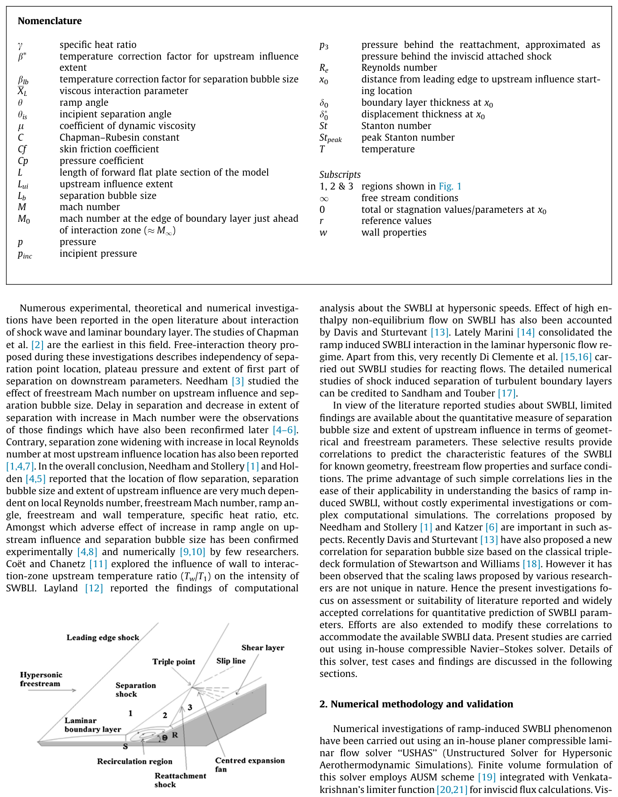
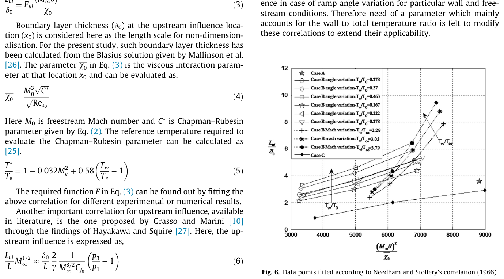
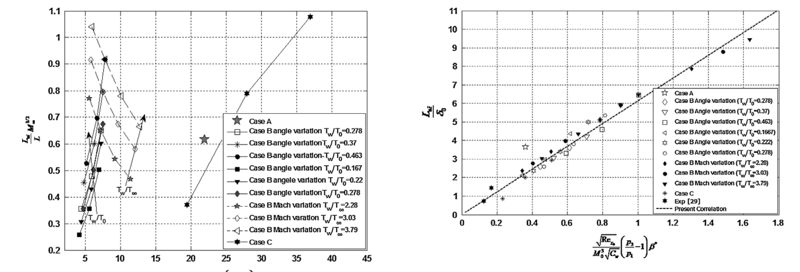
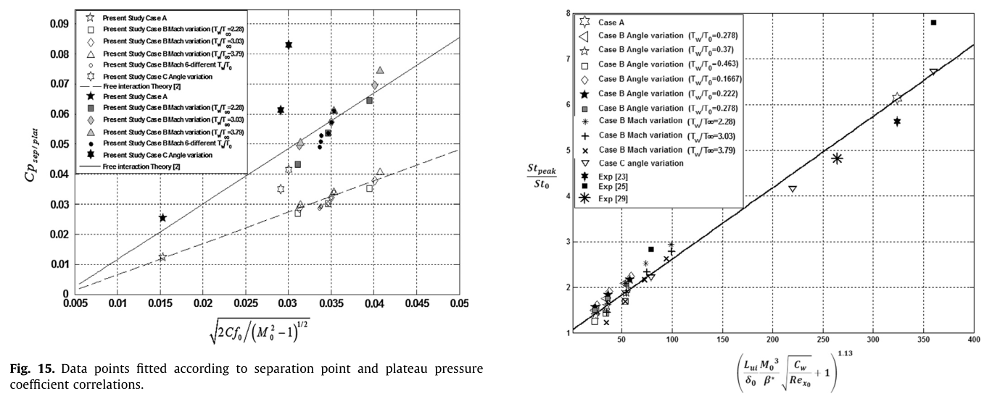

01中文摘要
以斜坡诱导激波与层流边界层的干扰为算例，用自主求解器系统检验文献中预测上游影响范围、分离泡长度、分离点压力、平台压力和峰值热流/Stanton 数的关联式。计算覆盖多种来流与壁面条件，结果显示已有席卷关联式在保持线性形式时无法同时纳入各影响参数的变化。为此作者修正了广泛使用的 Needham–Stollery 上游影响关联式和 Needham 分离泡关联式，并改进峰值 Stanton 数关联式，使预测适用性提高。
原始摘要（英文/原文）
Shock wave boundary layer interaction (SWBLI) is most attended research theme in the high speed flow regime for effective design of various parts of space vehicles. Hence, investigations in this field are invariantly carried out to estimate the extent of upstream influence, length of separation bubble, separation point pressure, plateau pressure and peak heatflux or Stanton number. Therefore, interaction of ramp induced shock and laminar boundary layer has been chosen as the test case for present studies. Literature reported correlations, for prediction of characteristic features of this interaction, are explored herewith using the in-house solver. However, results of present simulations for various freestream and wall conditions portrayed their inabilities to incorporate the variations of influencing parameters while retaining the linearity. In view of this, efforts are extended either to modify these widely appreciated correlations or to suggest a better among the reported ones to improve the estimates. The modifications suggested for prediction of extent of upstream influence, separation bubble size and peak Stanton number are seen to improve the applicability of the existing correlations.
02阅读说明
数值模拟研究（二维定常层流斜坡诱导 SWBLI）。全文 9 页、17 项抓图（其中 Table 1 被清单误标为“图1”，使用时按原图注校正）。正文公式在 PDF 文本层严重错位，已用原 PDF 第 44–49 页逐式核对；公式编号、页码以原刊为准。信息完整度较高，但部分图注只给趋势、未给定量误差；个别试验工况（如 Re∞/m）参考长度未明示。 文章类型：期刊
03一句话核心与三句话摘要
用二维层流NS模拟检验斜坡SWBLI经典关联式，指出其壁温/总温缩放缺陷并给出修正。
- 斜坡诱导 SWBLI 的工程预测依赖少量关联式，但既有关联式对上游影响范围、分离泡长度与峰值热流的定量预测缺乏统一性，尤其不能正确缩放壁温与总温。 AI概括
- 作者用自研 USHAS 二维层流可压缩 NS 求解器复现 Holden、Marini、Grasso 等工况，发现上游影响随壁温与斜坡角增大、随马赫数与总焓减小，且 Needham–Stollery 与 Grasso–Marini 两式给出的斜率相反、都无法整理不同壁温/总温比的数据。 AI概括
- 作者在 Needham–Stollery 式中引入 β*=(Tw/T0)^0.5(T1/T0)^0.5 得到式(10)，并给出修正分离泡关联式（F_lb=0.13）、峰值 Stanton 数关联式(22) 及自由相互作用系数 F_sep=1.04、F_plat=1.84。 AI概括
04核心内容清单
| 要点 | 类型 | 重要性 | 原文依据 | 属性 |
|---|---|---|---|---|
| 研究目标是评估并修正斜坡诱导层流 SWBLI 的工程关联式，而非提出新的湍流/转捩模型。 | 研究定位 | A | p42–43，Introduction | 原文明确 |
| 采用自研 USHAS 二维层流可压缩 NS 求解器，AUSM+Venkatakrishnan 限制器，显式 Euler，Sutherland 粘度。 | 数值方法 | A | p43，§2 | 原文明确 |
| 网格 190×80 已足以复现 Case A 的壁压、St 与 Cf 分布，作为后续计算网格。 | 网格无关性/验证 | A | p44，Figs. 3–4 | 原文明确 |
| 计算工况覆盖 M∞=5–11.63、Tw=290–500 K、θ=10–25°、T0=1080–1880.84 K，共 4 组试验构型。 | 工况范围 | A | p44，Table 1 | 原文明确 |
| 初始分离判据用 M1θ_inc=80√χ_L，部分工况落在分离区、部分落在附着区。 | 分离判据 | A | p42 式(1)；p44，Fig. 5 | 原文明确 |
| Lui 随 Tw 与 θ 增大、随 M∞ 与总焓减小；对给定来流，Lui 总存在。 | 参数趋势 | A | p44–45，§3 | 原文明确 |
| Needham–Stollery 与 Grasso–Marini 两式对 M∞ 的斜率相反，且都不能整理不同 Tw/T0 数据。 | 关联式缺陷 | A | p45，Figs. 6–7 | 原文明确 |
| 修正 Needham–Stollery 式(10) 引入 β*=(Tw/T0)^m(T1/T0)^n，取 m=n=0.5 后数据线性化。 | 关联式修正 | A | p45–46，式(10)–(11)，Fig. 8 | 原文明确 |
| 分离泡关联式中，Katzer 式(15) 优于式(14)；Davis–Sturtevant 式(16) 对 Tw/T0 线性但变 M∞ 失效。 | 关联式评估 | A | p47，Figs. 11–13 | 原文明确 |
| 修正 Needham 分离泡式(18) 加 β_lb 后使数据共线，拟合常数 F_lb=0.13。 | 关联式修正 | A | p48，式(18)–(19)，Fig. 14 | 原文明确 |
| 自由相互作用理论拟合得 F_sep=1.04、F_plat=1.84；两族直线斜率不同，壁温/总温变化时数据偏离。 | 压力系数 | B | p48–49，式(20)，Fig. 15 | 原文明确 |
| 峰值 Stanton 数关联式(22) 用本文 Lui 关系替代 Grasso–Marini 的 Lui 后，各工况点靠近同一直线。 | 热流关联式 | A | p49，式(21)–(22)，Figs. 16–17 | 原文明确 |
05引言：研究问题与领域缺口
【原文明确】SWBLI 是高超声速飞行器进气道、舵面、拐角等部位设计的关键问题，斜坡构型是典型代表；分离泡长度 Lb、上游影响范围 Lui、分离点/平台压力与峰值热流是核心特征量（p42）。作者指出，已有实验、理论、数值研究虽多，但能同时给出分离泡尺寸与上游影响范围、并显含几何与来流参数的定量关联式很少；Needham–Stollery 与 Katzer 的关联式较重要，但各家标度律“not unique in nature”（p43）。因此本文目标是：用统一数值方法评估文献关联式对上述特征量的适用性，并在必要时修改关联式以纳入更多参数（p43）。【AI概括】这是“关联式评估+经验修正”型研究，不是新物理模型。
06流动条件与几何构型
| 项目 | 数值/描述 | 依据 | 备注 |
|---|---|---|---|
| Case A（Holden [23]）来流、壁面与几何 | M∞=11.63；T0=1880.84 K；Tw=294.38 K；Re∞/m=55,2116 m⁻¹（按原文排版）；斜坡角 θ=15°；前平板长度 L=0.4394 m | p44，Table 1 | 原文单位列写作 Re∞/m，参考长度未在表中明示；55,2116 的千位分隔疑为排版问题，需回原文核对。 |
| Case B 低总焓（Marini [24]）来流、壁面与几何 | M∞=5、6、7、8；T0=1080 K；Tw=300、400、500 K；Re∞/m=800,000 m⁻¹；θ=10°、12.5°、15°；L=0.05 m | p44，Table 1 | 三档壁温×四档马赫数×三档斜坡角组合计算，原文未逐组合列点。 |
| Case B 高总焓（Marini [24]）来流、壁面与几何 | M∞=5、6、7、8；T0=1800 K；Tw=300、400、500 K；Re∞/m=800,000 m⁻¹；θ=10°、12.5°、15°；L=0.05 m | p44，Table 1 | 与低总焓组仅 T0 不同，用于隔离总焓影响。 |
| Case C（Grasso [25]）来流、壁面与几何 | M∞=10；T0=1102.5 K；Tw=290 K；Re∞/m=165,000 m⁻¹；θ=15°、20°、25°；L=0.179 m | p44，Table 1 | 变斜坡角工况组。 |
| 来流边界条件 | 入口给定均匀高超声速来流（uniform hypersonic freestream）；二维平面流动；层流 | p43，§2 | 未提及来流湍流度、噪声或攻角。 |
| 壁面热条件 | 等壁温 Tw，按 Table 1 给定；未给出壁面催化条件 | p44，Table 1 | 壁温比 Tw/T0 是本文重点考察参数。 |
| 气体模型与比热比 | 可压缩理想气体框架；γ 以符号出现；具体 γ 数值文中未提及 | p43–46，式(2)、(6)–(7) | 未说明是否量热完全气体、是否考虑高温真实气体效应。 |
| 计算网格 | 120×60、190×80、230×120 三套；采用 190×80；壁面、前缘与斜坡-平板拐角加密 | p44，§2 | 二维结构化网格。 |
07核心现象与关键参数
| 参数 | 定义 | 数值 | 关系/说明 | 依据 |
|---|---|---|---|---|
| χ_L（平板-斜坡接点处粘性干扰参数） | χ_L=M1^3√C*/√Re_L，C*=(μw/μ1)(T1/Tw) | 逐工况由 M1、Re_L、Tw 计算；文中未给数值表 | 用于式(1) 的初始分离角判据 M1θ_inc=80√χ_L | p42，式(1)–(2) |
| χ_0（上游影响起始位置 x0 处粘性干扰参数） | χ_0=M0^3√C*/√Re_x0 | 逐工况计算；文中未列表 | 式(3)、(13) 的长度尺度 | p45，式(4) |
| δ0（x0 处边界层厚度） | 由 Mallinson 等给出的 Blasius 解计算 | 逐工况计算；文中未列表 | Lui/δ0、Lb/δ0 的无量纲长度尺度 | p45，§3 |
| Lui（上游影响范围） | 斜坡脚到最上游受扰动位置的距离 | 由壁面压力分布提取；逐工况见图 6–8 | 随 Tw、θ 增大，随 M∞、T0 减小 | p42 图2；p44–45 |
| Lb（分离泡长度） | 分离点 S 与再附点 R 之间距离 | 由壁面剪切分布提取；逐工况见图 9–14 | 随 Tw、θ 增大，随 M∞、T0 减小 | p42 图1；p46–47 |
| p3/p1（斜坡后/来流压力比） | p3 近似为无粘附着斜激波后压力 | 由式(7) 按 M0、β 计算 | 高 Mach 下 p3/p1 ∝ M0^2 sin^2β ∝ M0^2θ^2 | p46，式(7) |
| β*（上游影响温度修正因子） | β*=(Tw/T0)^m(T1/T0)^n | m=n=0.5（拟合值） | 乘在式(9) 压力升项后得到式(10) | p46，式(11) |
| β_lb（分离泡温度修正因子） | β_lb=(Tw/Te)^0.5(Te/T0) | 按工况计算 | 式(18) 的温度缩放项 | p48，式(19) |
| F_lb（修正 Needham 分离泡关联式常数） | LbM0^3/(x0√Re_x0)=F_lb(p3/p2)^2β_lb 中的比例常数 | 0.13 | 拟合本文数据得到 | p48，式(18) |
| F_sep / F_plat（自由相互作用压力系数常数） | Cp,sep/plat=F_sep/plat[2Cf0/(M0^2−1)]^0.5 中的比例常数 | F_sep=1.04；F_plat=1.84 | 分离压力与平台压力两族直线 | p49，式(20) |
| St_peak/St_0（归一化峰值 Stanton 数） | 再附后峰值 Stanton 数与上游未扰动参考值之比 | 逐工况见图 16–17 | 式(22)：与 (Lui/δ0)(M0^3/√Re_x0)C_w+1 的 1.13 次方成正比 | p49，式(21)–(22) |
| C*（Chapman–Rubesin 常数） | C*=(μw/μ1)(T1/Tw)，参考温度按式(5) 计算 | 逐工况计算；文中未列表 | 出现在 χ_L、χ_0 及多个关联式中 | p42 式(2)；p45 式(4)–(5) |
08方法与数据
【原文明确】采用自研 USHAS（Unstructured Solver for Hypersonic Aerothermodynamic Simulations）二维平面可压缩层流 NS 求解器；有限体积法，无粘通量用 AUSM 格式配 Venkatakrishnan 限制器，粘性通量按 Blazek 方法，显式 Euler 时间推进，Sutherland 律求粘度，方程无量纲化；入口给均匀高超声速来流（p43）。用 Holden Case A 做网格无关性与验证：120×60、190×80、230×120 三套网格，比较壁面压力、Stanton 数与摩阻，结论是 190×80 已足以复现实验（p44，Figs. 3–4）。随后按 Table 1 的 Case A/B/C 计算（p44）。边界层厚度 δ0 由 Mallinson 等 Blasius 解给出；参考温度按式(5)；分离泡用壁面剪切分布判定；初始分离压力 p2 取 p_inc，后者用 Inger 三层理论计算（p46–47）。
| 项目 | 内容 | 依据 | 备注 |
|---|---|---|---|
| 求解器 | USHAS（Unstructured Solver for Hypersonic Aerothermodynamic Simulations），二维平面可压缩层流 NS | p43，§2 | 自研代码；非结构网格框架。 |
| 空间离散 | 有限体积法；无粘通量 AUSM 格式 + Venkatakrishnan 限制器；粘性通量按 Blazek 方法 | p43，§2 | 二阶精度细节文中未展开。 |
| 时间推进 | 显式 Euler；求定常解 | p43，§2 | 未给 CFL 数与收敛判据。 |
| 粘性 | Sutherland 律计算动力粘度 | p43，§2 | 未给 Sutherland 常数。 |
| 无量纲化 | 方程无量纲化；入口均匀高超声速来流 | p43，§2 | 参考量未逐一列出。 |
| 网格无关性 | 120×60、190×80、230×120；以 190×80 为最终网格 | p44，§2，Figs. 3–4 | 判据为壁面压力、Stanton 数和 Cf 分布与实验一致。 |
| 验证工况 | Holden Case A：M∞=11.63、Tw=294.38 K、θ=15°、L=0.4394 m | p44，Table 1；Figs. 3–4 | 实验数据来自文献[23]。 |
| 初始分离判据 | M1θ_inc=80√χ_L；θ>θ_inc 判为分离 | p42 式(1)；p44 图5 | 用于筛选可测分离泡的工况。 |
| 边界层厚度 | x0 处 δ0 由 Mallinson 等 Blasius 解计算 | p45，§3 | 用于 Lui/δ0、Lb/δ0。 |
| 参考温度 | T*/Te=1+0.032Me^2+0.58(Tw/Te−1) | p45，式(5) | 用于求 Chapman–Rubesin 常数与参考温度物性。 |
| 位移厚度 | Katzer 式所需 x0 处位移厚度由 Bertram–Blackstock 关联式给出 | p46–47，§4 | 原文未给该关联式具体形式。 |
| 初始分离压力 | p2 取 p_inc；p_inc/p1 用 Inger 三层解计算 | p46–47，§4 | 用于式(12)、(14)–(16)。 |
| 特征量提取 | Lui 由壁面压力分布提取；Lb 由壁面剪切分布提取 | p44–47，§3–§4 | 未给数值不确定度或提取阈值。 |
| 关联式拟合 | 将本文数据按各文献关联式的无量纲坐标作图，线性拟合求斜率/常数；修正式用试凑温度因子后最小化散布 | p45–49，§3–§6 | 拟合优度未给定量指标（如 R²）。 |
09核心推导与公式
以 Needham–Stollery 上游影响关联式 Lui/δ0=Fui(M0θ)^2/χ0 为起点，用高 Mach 斜激波关系把 (M0θ)^2 改写为压力升 (p3/p1−1)，使 θ→0 时 Lui→0；再乘温度因子 β* 以纳入壁温与总温。分离泡则从 Needham 式(12) 出发，保留其压力比平方与 Re/Mach 标度，另乘 β_lb 并重新组合成式(18)，由数据拟合 F_lb。峰值 Stanton 数把 Grasso–Marini 式中的 Lui 替换为本文修正的 Lui 关系。
关键假设
- 定常、二维、平面、层流边界层；无湍流、无转捩、无三维效应
- 来流为量热完全气体，γ 为常数（具体数值文中未提及）
- 斜坡诱导激波为无粘附体斜激波，p3 近似激波后压力
- 高 Mach 近似 M0^2≫1，且激波角 β 与斜坡角 θ 成正比（β∝θ）
- x0 处边界层可用 Blasius 解描述，δ0 与位移厚度由经验/相似解给出
- p2 取初始分离压力 p_inc，p_inc/p1 由 Inger 三层解给出
- 修正项 β*、β_lb 的形式与指数由本文数据拟合确定，不是从守恒方程导出
- 各关联式的比例常数对本文工况族为常数，未验证其随 γ、几何的普适性
推导过程
用 Needham–Stollery 的初始分离关系判断工况是否分离：M1θ_inc=80√χ_L；χ_L 由 M1、Re_L、壁温与来流温度通过 Chapman–Rubesin 常数给出。
Needham–Stollery 把 Lui 用 x0 处边界层厚度 δ0 与粘性干扰参数 χ0 无量纲化，并令其与 (M0θ)^2/χ0 成比例；δ0 由 Blasius 解给出。
用参考温度法把壁温与来流温度纳入物性：T*/Te=1+0.032Me^2+0.58(Tw/Te−1)，再由参考温度求 μ*、C*。
另一条被评估的上游影响关联式由 Grasso–Marini 给出：用 L 与 δ0 的无量纲长度、χ、M1 与 Cf0 组合，并把压力升 (p3/p1−1) 作为驱动项；它与 Needham–Stollery 式对 M∞ 的斜率符号相反。
为显式引入斜坡角，作者用高 Mach 近似 M0^2≫1，把无粘附着斜激波压力比写成式(7)；因 β∝θ，得到 p3/p1∝M0^2θ^2。
将式(7) 代入式(3) 的分子，得到式(8)；为满足无斜坡时 Lui=0，把 p3/p1 改为 (p3/p1−1)，得式(9)。
在式(9) 右端乘温度因子 β*=(Tw/T0)^m(T1/T0)^n，得到修正 Needham–Stollery 式(10)；对本文数据取 m=n=0.5 时线性拟合最好。
Needham 式(12) 用 (p3/p2)^2 与 √Re_x0/M0^3；Needham–Stollery 式(13) 直接借用上游影响形式；Katzer 式(14) 及等价式(15) 用 (p3−p_inc)/p1；Davis–Sturtevant 式(16) 用 Λ0（式17，含 μw/μe、Tr/Te 与 (Tw/Te)^0.5）与 3/2 次方压力项。
在式(12) 上增加温度因子 β_lb，并把方程重排为式(18)；β_lb=(Tw/Te)^0.5(Te/T0)。对本文及文献点拟合得 F_lb=0.13。
按 Chapman 自由相互作用理论，分离点与平台压力系数均由上游局部 Cf0 与 M0 组合成单一相似参数；拟合得 F_sep=1.04、F_plat=1.84。
Grasso–Marini 把 Hung–Barnett 的 (p3/p0)^1.13 关系用 Lui 改写为式(21)；本文用修正后的 Lui/δ0 替换，得到式(22)，使不同 M∞、θ、壁温/总温工况归一。
适用边界：全部修正项与指数是经验拟合，不是守恒方程推导结果；数据主要来自同一求解器与同一类斜坡构型，独立验证点很少（Holden–Moselle、Grasso–Marini 等）；γ 数值、壁面催化、三维与湍流效应均未覆盖；F_lb、F_sep、F_plat 是否随 γ 或几何变化文中未提及。
10结果：主要发现与关键证据
【原文明确】1）上游影响 Lui 随壁温 Tw 与斜坡角 θ 增大，随 M∞ 与来流总焓/总温减小；只要存在斜坡干扰，Lui 总存在；干扰强度随 θ 近似线性增强（p44–45）。2）Needham–Stollery 式(3) 与 Grasso–Marini 式(6) 在固定来流/壁面条件下都把 Lui 与 θ 线性联系，但两者对 M∞ 的斜率符号相反；两者都把不同 Tw/T0 的曲线竖直平移，却不能使不同总焓的数据落到同一路径（p45，Figs. 6–7）。3）引入 β* 后式(10) 使所有数据（含 Holden–Moselle 实验点）呈线性（p45–46，Fig. 8）。4）分离泡：Needham 式(12)、Needham–Stollery 式(13) 仅适用于变 M∞ 或变 θ；Katzer 式(14) 不适用于斜坡分离，式(15) 较好；Davis–Sturtevant 式(16) 对 Tw/T0 线性但对 M∞ 偏离；修正 Needham 式(18) 配合 β_lb 使数据与 Holden–Moselle、Grasso–Marini 点共线，F_lb=0.13（p46–48，Figs. 9–14）。5）自由相互作用理论式(20) 给出分离/平台压力系数两族不同斜率直线，数据随壁温/总温比偏离，拟合 F_sep=1.04、F_plat=1.84（p48–49，Fig. 15）。6）峰值 Stanton 数：Grasso–Marini 式(21) 对变 M∞ 失效；用本文 Lui 关联式替代后式(22) 使各工况点靠近同一直线，并得到额外实验点支持（p49，Figs. 16–17）。
| 发现 | 证据 | 证据类型 | 强度 | 位置 | 属性 |
|---|---|---|---|---|---|
| 190×80 网格足以复现 Case A 的壁面压力、Stanton 数与摩阻分布，验证了求解器对分离点、平台压力与再附点的预测能力。 | 三套网格结果几乎重合；与 Holden 实验对比“encouraging agreement”（p44，Figs. 3–4） | 数值验证 | 强 | p44，§2，Figs. 3–4 | 原文明确 |
| 初始分离判据把 Table 1 工况分成分离区与附着区，后续分离泡关联式只用分离区工况。 | Fig. 5 的 θ_inc–80√χ_L/M∞ 图；Case A、Case B 的 M=5–7/θ=15°、Case C 的 θ=20°/25° 落在分离区（p44、p46） | 工况筛选 | 强 | p44 图5；p46 §4 | 原文明确 |
| Lui 随 Tw 和斜坡角增大、随 M∞ 和来流总焓/总温减小；对任何斜坡干扰 Lui 均存在。 | §3 文字结论；Figs. 6–8 中不同 Tw/T0、T0 的数据族位置 | 参数趋势 | 强 | p44–45，§3 | 原文明确 |
| Needham–Stollery 与 Grasso–Marini 对 Lui 的预测在变 M∞ 时斜率符号相反，且都不能把不同 Tw/T0 数据整理到同一曲线。 | Figs. 6–7 中不同壁温比曲线竖直平移但不重合；正文明确“disparity in slopes”（p45） | 关联式对比 | 强 | p45，Figs. 6–7 | 原文明确 |
| 引入 β*=(Tw/T0)^0.5(T1/T0)^0.5 的修正 Needham–Stollery 式(10) 使全部数据（含 Holden–Moselle 实验点）呈线性，可视为 Lui 的广义关联式。 | Fig. 8 中所有数据点落在一条直线附近；原文称“excellent prediction with linear fit”（p45–46） | 关联式修正 | 强 | p45–46，式(10)–(11)，Fig. 8 | 原文明确 |
| 四种分离泡关联式中，Needham 式(12)/式(13) 和 Katzer 式(15) 仅适用于变 M∞ 或变 θ；Davis–Sturtevant 式(16) 对 Tw/T0 线性但变 M∞ 偏离；修正 Needham 式(18)（F_lb=0.13）使本文与文献点共线。 | Figs. 9–14 的线性拟合与偏离；F_lb=0.13（p48） | 关联式评估/修正 | 中 | p46–48，Figs. 9–14 | 原文明确 |
| 自由相互作用理论给出的分离压力与平台压力两族直线斜率不同，且数据随壁温/总温比偏离；拟合常数 F_sep=1.04、F_plat=1.84。 | Fig. 15：空心泡/虚线为分离压力，实线/实心泡为平台压力；两族斜率不同（p48–49） | 压力系数 | 中 | p48–49，式(20)，Fig. 15 | 原文明确 |
| Grasso–Marini 峰值 Stanton 数关联式对变 M∞ 工况失效；用本文 Lui 关联式替换后的式(22) 使不同 θ、M∞、壁温/总温数据靠近同一直线，并得到额外实验点支持。 | Figs. 16–17 对比：Fig. 16 数据分散、趋势随 M∞ 改变；Fig. 17 数据靠近拟合线（p49） | 热流关联式 | 中 | p49，式(21)–(22)，Figs. 16–17 | 原文明确 |
11机制解释与论证链
【原文明确】上游影响通过边界层亚声速层向上游传播压力升：斜坡角越大，无粘激波压力升越大，Lui 越长；Re 与壁温通过 x0 处 Cf0 和边界层厚度进入标度，壁温升高使关联式曲线整体上移，故 Lui、Lb 增大；来流 Mach 数与总焓升高则使 Lui、Lb 减小（p44–45）。【原文明确】分离泡存在的必要条件是 θ>θ_inc；足够大的上游影响并不自动保证分离泡（p46）。【AI概括】作者把壁温效应全部塞进 β*、β_lb 与 Cf0，并未给出“壁温如何改变近壁密度/剪切层稳定性”的细节机制；因此本文是标度律层面的解释，而非流动物理层面的因果链。
12讨论：结论、贡献与局限
【原文明确】作者把偏差归因于两点：一是原关联式只用 Lui 或 Lb 与压力升、Re、Cf 的幂次关系，未显式区分壁温与总温的作用；二是各家标度律形式不同，导致同一物理量出现不同斜率（p45–49）。修正策略是用压力升项 (p3/p1−1) 体现斜坡角，用 Cf0 体现 Re 与壁温，再额外乘温度因子 β* 或 β_lb；这些是经验拟合，不是从守恒方程严格导出（p45–48）。【AI概括】方法学价值在于给出“统一数据整理 + 逐步加温度因子”的关联式评估流程；局限是数据点仍主要来自本文同一求解器，独立实验验证很少。
作者结论
【原文明确】没有任何已报道关联式能对所有参数变化给出唯一趋势。上游影响方面，Needham–Stollery 式优于 Grasso–Marini 式，但两者都不能处理不同壁温/来流总温比；引入 β* 的式(10) 改善了 Lui 的定量预测。分离泡方面，除 Davis–Sturtevant 外，原关联式只对 M∞ 或 θ 变化呈线性；修正 Needham 式(18) 扩大了适用范围。自由相互作用理论需补充斜坡角与壁温缩放；峰值 Stanton 数关联式通过引入本文 Lui 关系得到改善（p50）。
主要贡献
- 用同一套二维层流 NS 解系统评估了上游影响、分离泡、分离/平台压力与峰值 Stanton 数的多组文献关联式。
- 提出含 β*=(Tw/T0)^0.5(T1/T0)^0.5 的修正 Needham–Stollery 上游影响关联式（式10）。
- 提出含 β_lb 的修正 Needham 分离泡关联式（式18），拟合常数 F_lb=0.13。
- 给出自由相互作用压力系数常数 F_sep=1.04、F_plat=1.84。
- 提出以本文 Lui 关系为基础的峰值 Stanton 数关联式（式22）。
局限与未解决问题
【原文明确】数据主要来自本文数值解，独立实验验证有限；修正项为经验拟合；只考虑二维层流、单一气体与斜坡构型；γ 的影响未单独考察；壁温比范围有限（Tw=290–500 K）。【AI识别】Table 1 的 Re∞/m 参考长度未注明，部分工况组合未逐点列出；图 8、14、17 的拟合优度没有定量指标；式(22) 中 C_w 的定义与取值未明确；把 p2 取为 p_inc 会引入三层理论误差。
13对高速流动与工程的意义
【AI概括】对高超声速进气道、隔离器、舵面等斜坡/压缩拐角的热防护与分离预测，本文提供了可直接套用的 Lui、Lb 与 St_peak 修正标度，尤其提醒：只按 M∞ 与 θ 拟合的关联式在壁温/总温变化时会系统性失准。方法上，“统一数据 + 逐项加温度因子 + 线性化检验”的流程可迁移到其他 SWBLI 构型。【AI推断】由于验证主要依赖同一求解器，工程使用前应先用目标构型的实验或高保真 CFD 校核 F_lb、F_sep、F_plat 等常数。
14核心图件




15可引用原文素材
| 原文短句 | 可支持的观点 | 位置 | 使用建议 |
|---|---|---|---|
| “none of the reported correlations predict unique trend” | 全文核心判断：既有关联式不具唯一性 | p50，Conclusions | 用于说明本文动机与结论，适合放在引言或结论对比处 |
| “upstream influence increases with increase in wall temperature” | 壁温升高使上游影响范围增大 | p44，§3 首段 | 引用参数趋势时使用，需与“随 M∞、总焓减小”并列 |
| “both correlations fail in the prediction for different wall to freestream temperature ratios” | Needham–Stollery 与 Grasso–Marini 均不能处理壁温比 | p50，Conclusions | 支撑修正关联式的必要性 |
| “grid size of 190 × 80 is sufficient to reproduce experimental measurements” | 网格无关性结论 | p44，§2 | 引用数值设置时使用 |
| “The value of Flb is observed as 0.13.” | 修正分离泡关联式的拟合常数 | p48，§4 | 复现式(18) 时引用 |
| “Fsep = 1.04 and Fplat = 1.84” | 自由相互作用压力系数拟合值 | p49，§5 | 引用分离/平台压力关联式时使用 |
| “almost all the present data points lie closer to the fitted line” | 式(22) 对峰值 Stanton 数的归一化效果 | p49，§6 | 支撑峰值热流关联式改进 |
| “p2 is taken as the incipient pressure, pinc” | 分离泡关联式中 p2 的处理方式 | p46，§4 | 复现式(12) 时说明 p2 取值 |
16最终核验
| 核验项 | 结论 |
|---|---|
| 仅基于全文 | 是——仅使用 bundle 全文、抓图清单与原 PDF 第 44–49 页核对公式；未引入外部知识或文献结论。 |
| A 级要点有依据 | 是——A 级要点均有页码、图号或公式支撑：Table 1（p44）、式(1)–(22)（p42–49）、Figs. 5/8/14/17（p44–49）。 |
| 属性标注 | 是——three_sentence、core_points、findings 均逐条标注【原文明确】/【AI概括】/【AI推断】。 |
| 覆盖范围 | 全文 9 页已读完；IMRaD、工况表、关键参数、方法、推导链、2–4 幅图件、引文与核验项均覆盖。 |
| 无编造 | 未编造页码、图号、公式或数据；Table 1 图号错位、Re∞/m 参考长度、γ 数值等缺失或存疑处已注明“文中未提及/需回原文核对”。 |
需回原文确认
- Table 1 中 Case A 的 Re∞/m 写作 55,2116，是否为 552,116 m⁻¹ 的排版错误？参考长度是什么？
- F_lb=0.13、F_sep=1.04、F_plat=1.84 是否随 γ、斜坡几何或 Re 范围变化？文中未给敏感性分析。
- 式(22) 中 C_w 的定义、取值与参考温度未明确，复现时如何计算？
- 分离泡关联式统一用 p2=p_inc，Inger 三层解在强干扰、低 Re 下的误差有多大？
- 修正关联式的指数 m=n=0.5 是否唯一？文中未给拟合优度或置信区间。
- 本文数据几乎全部来自 USHAS 同一求解器，独立实验验证仅少量文献点，普适性需进一步确认。
- 二维层流假设对 Case A（M∞=11.63）是否成立？原文未讨论三维/转捩效应。
17关联文献
依据标签、板块、构型与作者脉络自动关联，可据此追踪同一问题的前序与后续工作。
18引用格式
选择期刊风格后复制；出处保留原刊名。BibTeX 可直接用于 LaTeX。
引用格式
John, B. & Kulkarni, V. 2014 Numerical assessment of correlations for shock wave boundary layer interaction. Computers & Fluids 90, 42–50. https://doi.org/10.1016/j.compfluid.2013.11.011
PDF上传 PDF 并更新本页
本页缺少全文、摘要或图件时，可在浏览器本地补入 PDF。解析完全在本机完成，不上传网络；完成后会更新本页的 PDF 打开链接、原摘要、IMRaD 机器抽取、关键句与含图页面。复杂的公式语义与中文深度解读仍以原文和既有精读记录为准。
Zotero 笔记摘录
求解了压缩拐角的层流干扰流动 比对了多个文献的关联式的结果，发现多个文献已有关联式都只能拟合部分参数，不能统一，因此本文修改了Needham-Stollery上游影响关联式和Needham分离泡关联式，并改进了峰值热流关联式 上游影响长度（相互作用长度）： 分离泡尺度： 峰值St数： 自由干扰压力系数关联式（没变）：
明确重申： 分离泡长度随 θ 增大、随 Tw 增大；随 Ma 增大、随 T0 增大而减小 。 Re ：层流关联式中分离长度通常含 Re1/2正比；上游影响也含 Re1/2。但作者强调现有关联式没有普适性。